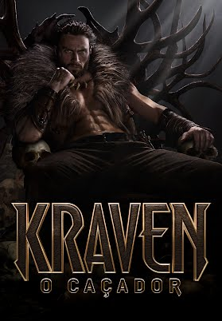

Essa gênero é para aquela pessoa que curte uma aventura com um pouco mais de intencidade e uma certa violência, aqui vai algumas recomendações.
Anos após a morte de Maximus, Lucius é forçado a entrar no Coliseu depois da conquista de seu lar por imperadores romanos tirânicos. Com o futuro do Império em risco, ele precisa encontrar força e honra para devolver a glória de Roma ao seu povo.
Duração: 2 horas e 27 min.
Classificação indicativa: 16 anos.

Kraven – O Caçador é a visceral história de origem cheia de ação que mostra como surgiu um dos vilões mais icônicos da Marvel. Aaron Taylor-Johnson interpreta Kraven, um homem cujo relacionamento complexo com seu impiedoso desperta seu desejo de vingança com consequências brutais, motivando-o a se tornar não apenas o maior caçador do mundo, mas também um dos mais temidos.
Duração:2 horas e 7 min
Classificação indicativa: 16 anos.